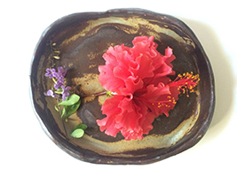
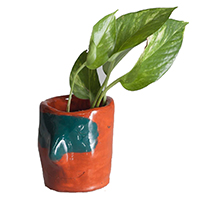

La manera en la que nos gusta hacer todas las cosas
Joy es una palabra significativa para nosotros, es la manera en la que nos gusta hacer todas las cosas aquí en el studio, también es el sentimiento que queremos transmitirle a cada uno de los clientes en las piezas que creamos. Partiendo de este enfoque trabajamos con diversos materiales en diferentes técnicas, para de esta forma innovar en el diseño de producto teniendo como prioridad el reciclaje y fomentar a nuestros clientes tener conciencia por un mundo ecostenible.

Orgánico, natural, apegados a la artesanía y al diseño para todos.
Exploración de los lugares mas desatendidos de la mente, símbolos que despiertan percepciones, colores, formas que nos hablan a un nivel consciente e inconsciente. Transmutación de la materia, continuidad, hecho a mano, utilidad, imperfección, los ingredientes para poder entender, asimilar y apreciar los que nos cuentan cada pieza de cerámica de esta colección, hechas con la única pretensión de crear algo, mas allá de cual sea la etiqueta otorgada a ese algo.
